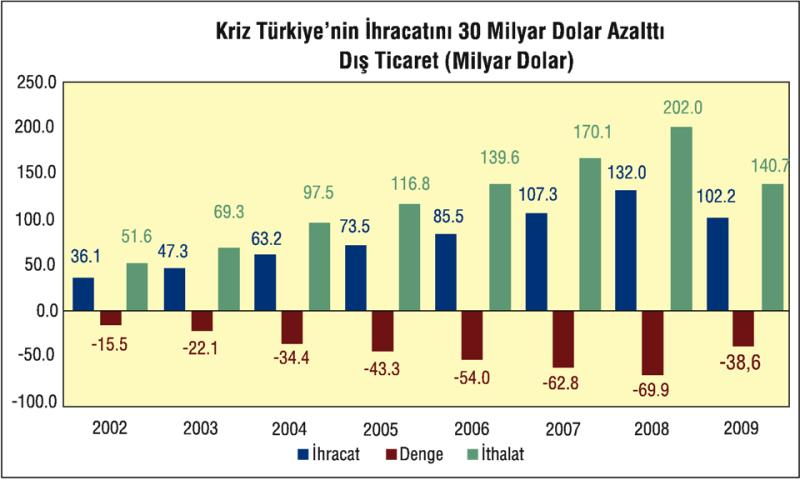

2001 krizinden sonra Türk parasının değerlenmesi ve artan ham madde fiyatlarına bağlı olarak rekor bir büyüme kaydeden cari işlemler açığı ekonomide kaydedilen küçülmeyle birlikte azalmaya başladı, ancak yine de fazlaya dönüşmedi. Yani küçülme yılında bile döviz açığı daralsa da sürdü.
Kaynak. Merkez Bankası
(*) Kasım 2009 sonu itibariyle yıllık.
Yıllık Cari işlemler açığı 2009 yılında 13 milyar 854 milyon dolar olarak gerçekleşti. Cari işlemler açığının 2010 yılında yeniden büyümesi bekleniyor.
Kriz öncesinde uygulanan yüksek faiz-düşük kur politikası, Türkiye'ye bu yıllarda ihtiyacından daha fazla dış finansman girişine yol açtı. Bu gelişme bir yandan yüksek miktardaki cari işlemler açığının finansmanını kolaylaştırıp ithalatı teşvik ederek yerli sanayinin "ucuz ithalat karşısında tıkanmasına" yol açtı.
Türkiye'nin 2008 yılında 70 milyar dolarlara tırmanan yıllık dış ticaret açığı ekonomideki yavaşlamaya bağlı olarak azalıyor. Türkiye'nin yıllık ihracatı 2009 yılında 102,2 milyar dolara kadar inerken, toplam ithalatı ise 140, 8 milyar dolara geriledi.
| 2002 | 2003 | 2004 | 2005 | 2006 | 2007 | 2008 | 2009 Kasım |
|
| Cari işlemler Dengesi | -0,6 | -7,5 | -14,4 | -22,1 | -31,9 | -38,2 | -41,9 | -14,0 |
| İhracat (FOB) | 36,1 | 47,3 | 63,2 | 73,5 | 85,5 | 107,2 | 132,0 | 102,1 |
| İthalat (CİF) | -51,6 | -69,3 | -97,5 | -116,8 | -139,6 | -170,1 | -202,0 | -140,9 |
| Dış Ticaret Dengesi | -15,5 | -22,1 | -34,4 | -43,3 | -54,0 | -62,8 | -70,0 | -38,8 |
| Turizm Gelirleri | 8,5 | 13,2 | 15,9 | 18,2 | 16,9 | 18,5 | 22,0 | 21,3 |
| Hizmetler Dengesi | 7,9 | 10,5 | 12,8 | 15,3 | 13,8 | 13,9 | 17,5 | 16,3 |
| Dış Borç Faiz Ödemeleri | 6,4 | 7,0 | 7,1 | 8,0 | 9,4 | 10,7 | 11,6 | 10,3 |
| İhracat/İthalat (%) | 69,9 | 68,1 | 64,8 | 62,9 | 61,3 | 63,0 | 63,8 | 72,5 |
| Cari İşl. Dengesi/GSMH | -0,3 | -2,5 | -3,7 | -4,6 | -6,1 | -5,7 | -5,5 | -2,3 |
Kaynak: TÜİK
Türkiye'nin 40 milyar doların üzerinde cari işlemler açığı vermesinde önemli bir rol oynayan ihracatın ithalatı karşılama oranındaki bu düşüş, küresel krizle birlikte durdu. 2009 yılında ihracatının ithalatı karşılama oranı yüzde 72,6 düzeyine yükseldi. 2001 krizinden önce yüzde 51'e kadar geriledikten sonra krizle birlikte yükselerek yüzde 75,7'ye kadar çıkan ihracatın ithalatı karşılama oranı, ithalatta yaşanan yüksek oranlı artışa bağlı olarak 2006 yılına kadar önemli ölçüde düşerek yüzde 61,3'e kadar indi.

Kaynak: TÜİK
Türkiye son yedi yılda (2003–2009 yıllarını kapsayan dönemde) toplam 325,1 milyar dolarlık dış ticaret açığı verdi.
Türkiye'nin 2002 yılında 15,5 milyar dolar olan dış ticaret açığı, 2008 yılında 70 milyar dolara ulaştıktan sonra, ekonomik daralma ile birlikte azaldı ve 2009 yılında 38,6 milyar dolara kadar geriledi.
Ekonomide yaşanan yavaşlamaya ve başta ham petrol olmak üzere uluslararası emtia fiyatlarındaki düşüşe bağlı olarak dış ticaret açığındaki daralmanın süreceği bekleniyordu.
Türkiye'nin ithalatının önemli bir bölümünü ham madde ithalatı oluşturmaya başladı. Özellikle ham petrol ve doğalgaz fiyatlarında önceki yıllarda yaşanan artışlar, hammadde ithalatının toplam ithalat içerisindeki payını yüzde 75'e kadar çıkardı.
Ancak 2009 yılında yaşanan ekonomik küçülme hammadde ithalatının toplam ithalat içerisindeki payının yüzde 70'e kadar düşmesine yol açtı.
2002 yılından sonra ham madde ithalatı yüzde 163, yatırım malları ithalatı yüzde 155, tüketim malları ithalatı ise yüzde 293 oranında arttı.
2004-2005-2006 ve 2007 yıllarında cari işlemler açığından çok daha yüksek miktarlarda net finansman girişi yaşanan Türkiye'de 2008 ve 2009 yıllarındaki finansman girişi cari işlemler açığının altında kaldı.
Buna göre 2008 yılında Türkiye'nin 8,2 milyar dolarlık finansman açığı oluştu. 2009 yılındaki dış finansman açığı ise 7,6 milyar dolar oldu (Finansman açığı=net sermaye girişi-cari işlemler açığı).
Kaynak: Merkez Bankası
Türkiye'de bir yandan cari işlemler açığı verilirken bir yandan da net sermaye çıkışı yaşanması Türkiye ekonomisinin yüzde 4,7 küçülmesine yol açtı. Bu gelişmenin ekonomi üzerinde çok daha büyük bir tahribata yol açmasını ise ekonomiye "kaynağı belirsiz", şaibeli döviz girişlerinin artması önledi.
Ödemeler dengesi bilançosunda "net hata ve noksan" kalemi 2008 yılında 5,4 milyar dolarlık, 2009 yılında ise 9,1 milyar dolarlık "döviz girişi" yaşandığına işaret ediyor
NET HATA VE NOKSAN KALEMİ
Merkez Bankası'nın da kaynağını net olarak açıklayamadığı söz konusu kaynağı belirsiz, şaibeli ve dolayısıyla kayıt dışı döviz girişleri, oluşan finansman açığının döviz rezervleri üzerinde fazla baskı yapmasını ve Türk lirasının çok daha fazla değer kaybetmesini önledi.
IMF'nin hesaplamalarına göre Türkiye'nin 2008 yılında GSYH'nin yüzde 5,7'sine kadar yükselen cari işlemler açığı 2010'da yüzde 1,9'a kadar gerileyecek. Ekonomideki rekor küçülmeye rağmen Türkiye ABD ve İngiltere gibi ülkelere yakın oranda cari açık verecek.
ÇEŞİTLİ ÜLKELERDE CARİ İŞLEMLER DENGESİ/GSMH ORANI, %
| 2009 | 2010 | 2011 | |
| Arjantin | 4, 4 | 4, 9 | 4, 0 |
| Brezilya | -1, 3 | -1, 9 | -1, 8 |
| Çin | 7, 8 | 8, 6 | 8, 7 |
| Fransa | -1, 2 | -1, 4 | -1, 4 |
| Almanya | 2, 9 | 3, 6 | 4, 2 |
| Hindistan | -2, 2 | -2, 5 | -2, 4 |
| İtalya | -2, 5 | -2, 3 | -2, 7 |
| Japonya | 1, 9 | 2, 0 | 2, 5 |
| Rusya | 3, 6 | 4, 5 | 5, 1 |
| Türkiye | -1, 9 | -3, 7 | -4, 2 |
| İngiltere | -2, 0 | -1, 9 | -1, 8 |
| ABD | -2, 6 | -2, 2 | -2, 6 |
Cari işlemler açığının GSYH'ye oranının 2010 yılında ise yüzde yeniden yüzde 3,7'ye kadar yükseleceği tahmin ediliyor. Bu haliyle Türkiye 2010 yılında en fazla cari işlemler açığı verecek ülkeler arasında yer alacak.
Çin, Japonya ve Almanya gibi cari işlemler fazlası veren ülkelerin cari fazlalarının GSYH'ye oranının ise gelecek yıl artması bekleniyor.